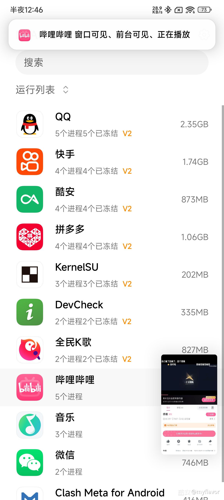

从零搭建 NoActive：让手机后台真正安静下来的完整实战
NoActive 是一款 Android 后台冻结工具，通过 Cgroup Freezer 机制将不活跃的应用进程真正挂起。本文带你从零开始完成环境准备、内核模块选择、冻结方式配置到日常使用，中间穿插几个新手最容易踩的坑。
这篇教程走完，你手上的 Android 手机就能做到：切到桌面或其他应用时，上一个应用的进程会被真正冻结，后台不跑了、消息不推送了，耗电和发热明显下降。
它的官网上有完整的功能清单和变更日志。NoActive 不是那种"把应用杀掉"的一刀切方案——它通过内核层面的 Cgroup Freezer 机制把进程挂起，切回来再恢复，应用状态不会丢。听起来神奇，但实际配置起来确实有几个门槛，尤其是内核模块和冻结方式的选择，选错了要么冻结不生效要么卡屏。下面一步步来。
第一步：确认前置条件
你需要三样东西（安装包直接从NoActive下载页面拿就行）：
- 一台已 Root 的 Android 设备（KernelSU 或 Magisk 均可）
- LSPosed 框架（NoActive 以 Xposed 模块形式运行）
- 内核版本 ≥ 4.19（太老的内核玩不了 V2 冻结）
先看内核版本：设置 → 关于手机 → Android 版本 → 内核版本。格式一般是 5.10.xxx 或 4.19.xxx，记下来，后面选冻结方式全靠它。
第二步：选内核模块
NoActive 的冻结功能依赖内核模块来桥接用户态和内核态。没有模块的话，要么冻结不了、要么切回来卡死。
打开 NoActive 的内核模块选择界面，你会看到几个选项：
ReKernel-X 是现在的首选——异步缓存清理、网络解冻优化都带上了，5.10 及以上内核直接选它。如果你的内核是 5.4 或以下，选 ReKernel_KPM。极少数设备用不了 ReKernel，可以考虑 NkBinder_eBPF，不过效率低一些。
有个捷径：小米/红米/POCO 的 MIUI/HyperOS 系统自带 Millet 模块，OPPO/Realme/一加的 ColorOS/RealmeUI 自带 Hans 模块。这些厂商模块直接用，不用额外刷入。
刷完模块重启，打开 NoActive 主页看内核模块状态——显示模块名和版本号就是正常。如果长期显示问号，说明模块没加载成功，回头检查刷入步骤。

第三步：选对冻结方式
这是新手最容易翻的一步，直接决定了冻结能不能生效。三种方式的选择逻辑完全由内核版本和厂商 ROM 决定，给你一张速查表：
| 内核版本 | ROM | 冻结方式 |
|---|---|---|
| 6.1+ / 5.15 / 5.10 | 任意 | V2 |
| 5.4 | 任意 | V2（配 ReKernel_KPM） |
| 4.19 | MIUI / HyperOS | V1 |
| 4.19 | ColorOS / RealmeUI | V1 |
| 4.19 | 原生 AOSP / GSI | Kill |
简单说：5.10 及以上无脑 V2；4.19 看是不是厂商定制 ROM，是的话 V1，不是就 Kill。
NoActive 的设置里直接能切换冻结方式，改完保存就行，不用重启。切完之后去 NoActive 的运行列表看一眼——应用后面应该显示"已冻结"，说明配置对了。
第四步：日常使用
配置好之后，日常使用几乎不用动脑。NoActive 的主界面会列出所有已安装应用，勾上的就是开启冻结的。切到其他应用或桌面时，被勾选的应用自动冻结；切回来自动恢复。
几个实用的小操作：
- 白名单：有些应用不应该被冻结（比如导航、后台下载），在应用列表里长按→加入白名单，或者直接取消勾选。
- 运行列表：这里实时显示当前哪些应用在前台活跃。点一下应用可以手动冻结或解冻，方便调试。
- 全局开关：顶部有个总开关，临时不想用了一键关掉就行。

新手最容易踩的三个坑
坑一：冻结方式选了但运行列表还是不显示"已冻结"
别慌，按这个顺序排查：
- 回到 NoActive 设置，确认冻结方式确实切换成功了
- 看内核模块状态是不是长期问号——如果是，说明模块没加载，重刷一遍
- 打开 LSPosed 日志，搜有没有 "Freeze Error" 或通信错误
- 最后一招：Kill 方式如果被 SELinux 拦截，可以在终端里跑
su && magiskpolicy --live "allow system_server * process {sigstop}"放开权限 - 如果这几步都没搞定，去NoActive文档找更细的排查流程，内核 Cgroup 支持检测那段讲得挺详细的
坑二：切回应用时卡屏或黑屏
这个现象在解冻时出现，原因是内核恢复进程调度有短暂延迟。给三个解法：
- 先确认用的是 ReKernel 系列模块，NkBinder 的解冻稳定性确实差一些
- 如果某个应用特别容易卡，考虑把它加入白名单
- 接受现实：目前这个问题没有完美解法，切换时慢一点，别快速连切，1 秒左右就恢复了
坑三：文件管理器里操作卡住
这是 NoActive 冻结了 Binder 通知导致的——文件管理器处于冻结状态时，其他组件的 Binder 通知传不进来。解法：
- 刷 ReKernel（它对 Binder 通知的处理更好）
- 或者在 MasterConfig.json 里把
freezeBinder设为false，代价是冻结效果会打折扣
进阶：还能玩什么
基础配置跑通之后，可以研究一下 NoActive 的高级功能：后台优化配置（异步缓存清理的激进程度可调）、MasterConfig.json 里的 freezeBinder 开关、以及通过 KernelSU 模块批量管理应用的冻结规则。这些属于调优范畴，先用起来再慢慢折腾也不迟。
整体来说，NoActive 的门槛主要在前两块——内核模块和冻结方式。选对了这两项，后面就是傻瓜式使用。选不对的话，冻结不生效、卡屏、文件操作卡住这些问题全都会冒出来。照着这篇教程的四步走下来，配置这块应该能一次搞定。
NoActive 的资料和模块包在GitHub主仓、Gitee镜像、GitCode同步仓都能拿到，国内访问哪个快就用哪个。版本更新比较勤，bug 修得也及时。用了大半年，后台耗电降了至少 40%，刷微博刷一半切出去聊微信再切回来，状态也还在。如果你也在烦 Android 后台乱跑的毛病，不妨试试。